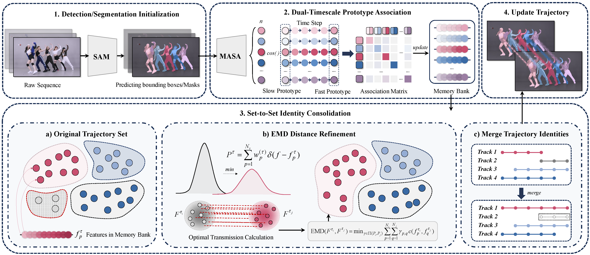
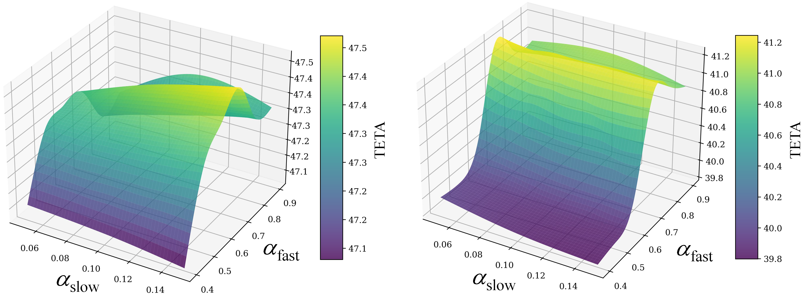
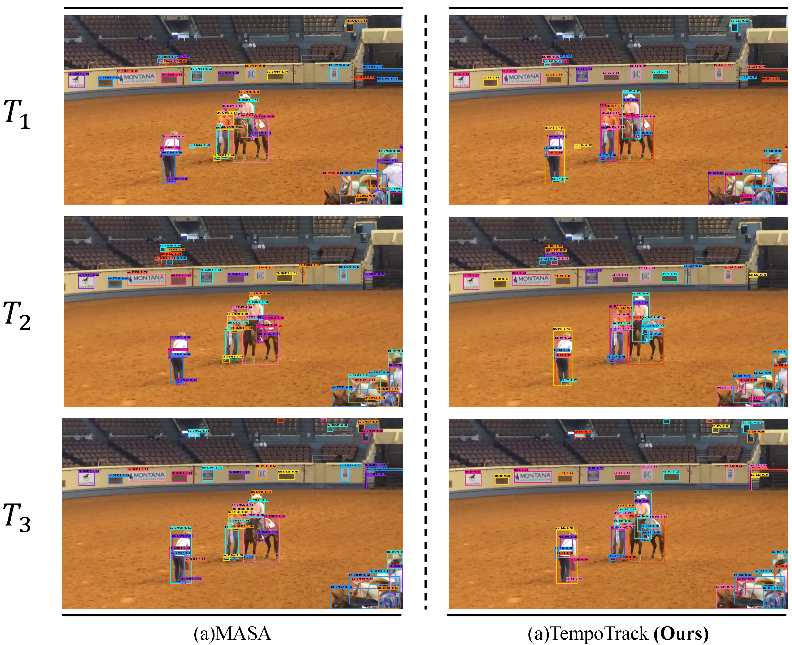
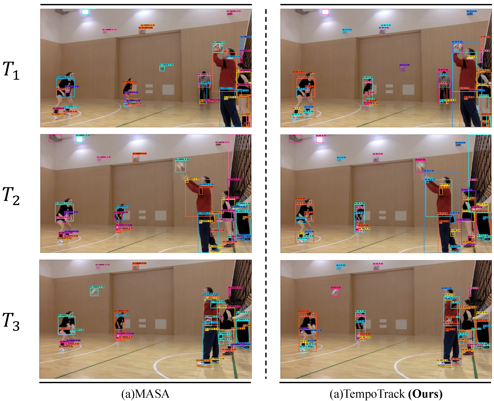

Memory as anchor
Trajectory history is explicitly used to stabilize association when frozen open-vocabulary features drift over time.
Open-Vocabulary Multi-Object Tracking
A training-free temporal association framework that stabilizes frozen open-vocabulary features with dual-timescale prototypes and EMD-based tracklet consolidation.
Affiliation 1 · Affiliation 2 · Under Review
Overview
Open-Vocabulary Multi-Object Tracking (OV-MOT) leverages pre-trained open-vocabulary detectors to track arbitrary categories without category-specific training. However, frozen open-vocabulary embeddings are highly unstable on unseen, blurred, or heavily deformed targets, making conventional frame-to-frame matching brittle and causing frequent identity switches and fragmented tracklets.
TempoTrack addresses this issue through the principle of memory as anchor. Instead of modifying the detector or retraining the representation learner, it improves identity consistency by exploiting trajectory history. The framework maintains dual-timescale appearance prototypes for each tracklet and performs set-to-set identity consolidation with Earth Mover’s Distance to reconnect temporally disconnected fragments.
Extensive experiments show that TempoTrack serves as a robust, plug-and-play enhancement across diverse open-vocabulary trackers. On the OVMOT benchmark, it reaches 48.4 TETA and 47.0 AssocA, demonstrating that memory-driven temporal association effectively mitigates the instability of frozen zero-shot video features.
Why it matters
Trajectory history is explicitly used to stabilize association when frozen open-vocabulary features drift over time.
A fast prototype adapts to recent appearance changes, while a slow prototype preserves long-term identity consistency.
Tracklet memory banks are treated as feature sets, and EMD is used to reconnect temporally compatible fragments globally.
The framework works as a training-free association enhancement without changing the detector or retraining the feature encoder.
Approach

Overview of the TempoTrack pipeline. This figure should summarize the dual-timescale prototype association stage and the subsequent set-to-set tracklet consolidation stage.
Each tracklet maintains a fast prototype and a slow prototype. The fast prototype captures recent appearance changes, while the slow prototype serves as a stable long-term anchor against drift.
Historical appearance features are stored in a memory bank for each tracklet. TempoTrack then measures set-level similarity with Earth Mover’s Distance to reconnect fragmented trajectories globally.
Experiments
| Method | Base TETA | Base AssocA | Novel TETA | Novel AssocA |
|---|---|---|---|---|
| OVTrack† | 36.3 | 36.3 | 32.0 | 33.2 |
| MASA (R50)† | 36.9 | 36.4 | 30.0 | 34.6 |
| TempoTrack (R50)† | 38.4 | 40.1 | 32.3 | 41.0 |
| TempoTrack (Detic)† | 48.4 | 47.0 | 42.0 | 44.0 |
A compact benchmark summary highlighting representative improvements on base and novel categories.

Sensitivity analysis of the main hyperparameters in TempoTrack, showing how temporal memory and consolidation settings affect association performance and overall tracking quality.
Visualization

Qualitative comparison under challenging conditions such as occlusion, blur, or target deformation, illustrating how temporal memory improves identity continuity.

Another representative example showing more stable identity preservation and reduced trajectory fragmentation compared with a baseline open-vocabulary tracker.
Demo
Usage
conda create -n tempotrack python=3.10 -y
conda activate tempotrack
pip install -r requirements.txt
pip install -U openmim
mim install mmengine
pip install mmcv==2.1.0 -f https://download.openmmlab.com/mmcv/dist/cu118/torch2.1/index.html
pip install git+https://github.com/open-mmlab/mmdetection.git@v3.3.0
python demo.pydata/
├── tao/
│ ├── frames/
│ │ ├── train/
│ │ ├── val/
│ │ └── test/
│ ├── annotations/
├── bdd/
│ ├── bdd100k/
│ │ ├── images/
│ └── annotations/
└── checkpoints/Reference
@inproceedings{tempotrack2026,
title = {Memory as Anchor: Temporal Association for Open-Vocabulary Trackers},
author = {Author 1 and Author 2 and Author 3 and Author 4},
booktitle = {Conference Name},
year = {2026}
}